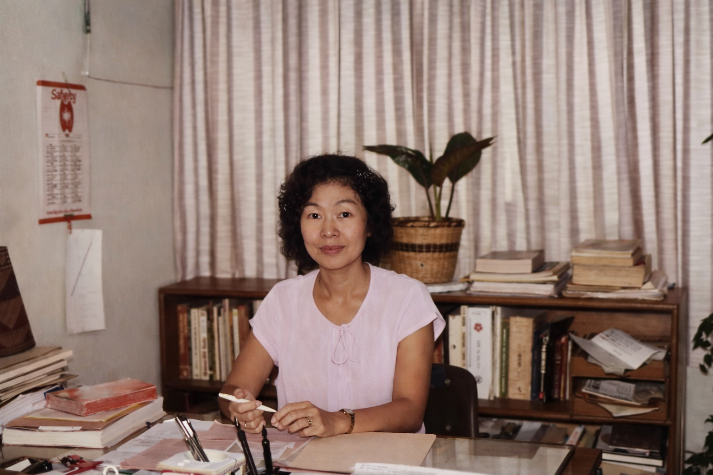
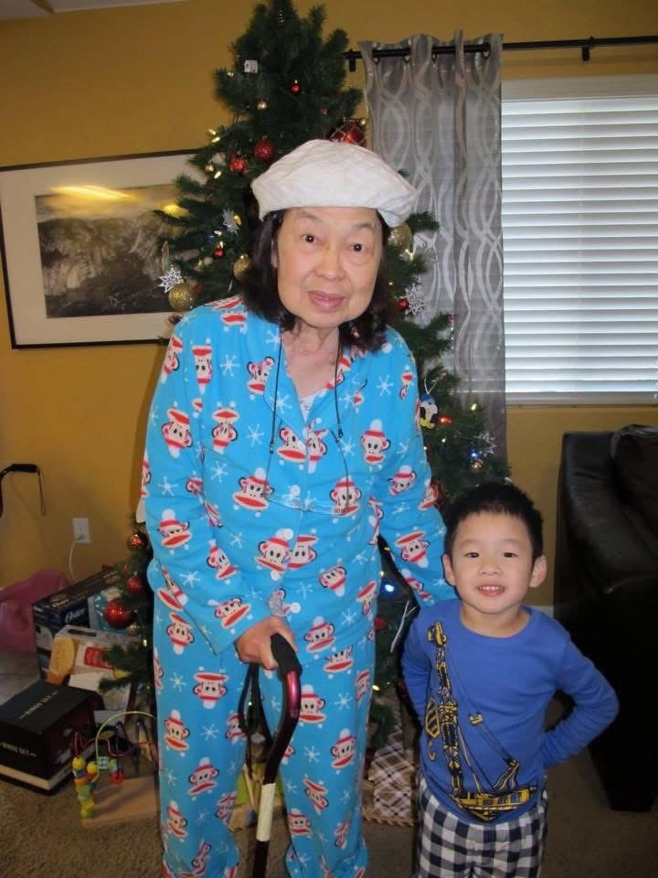
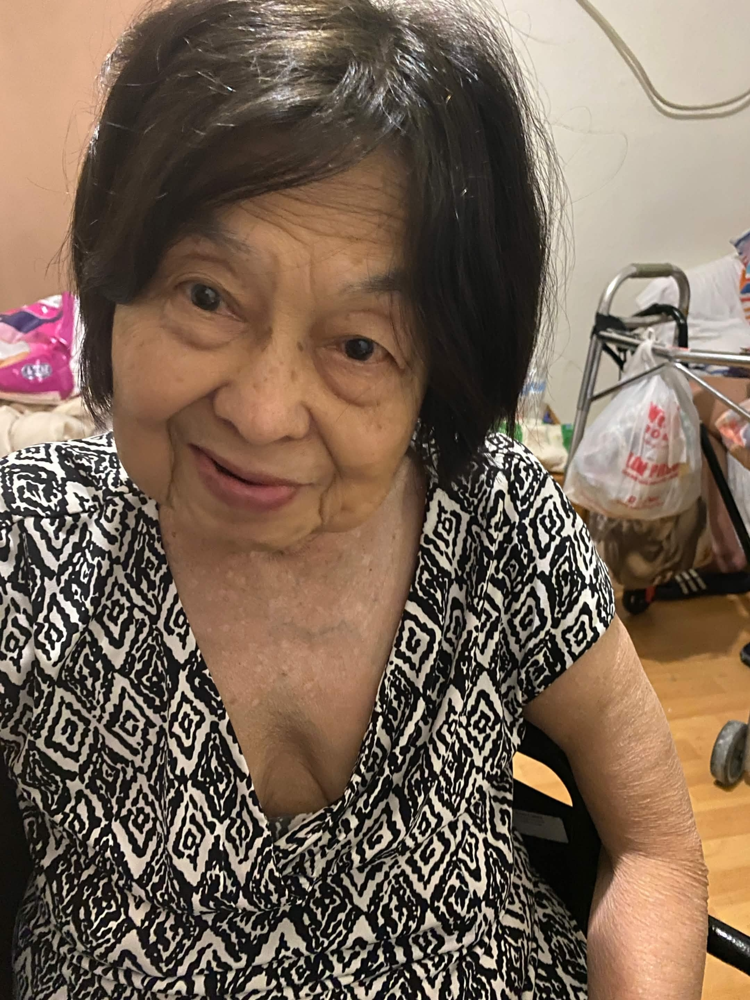
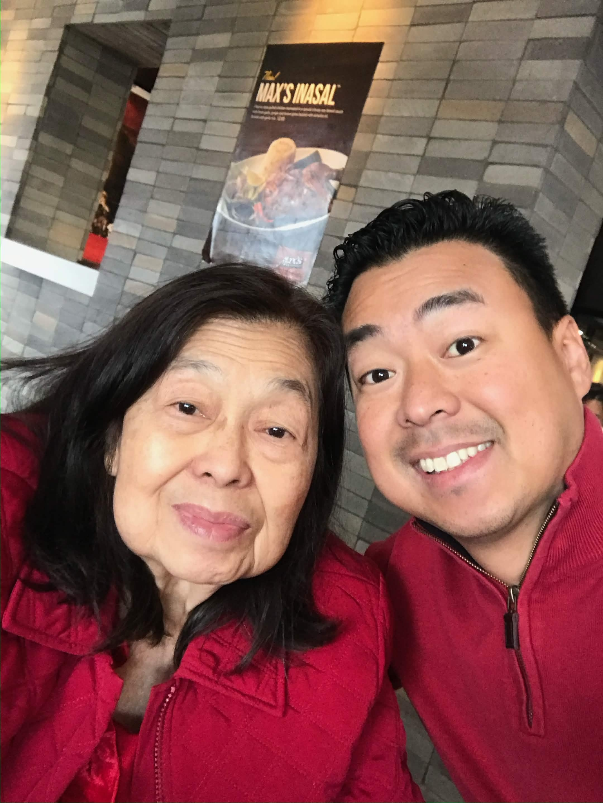
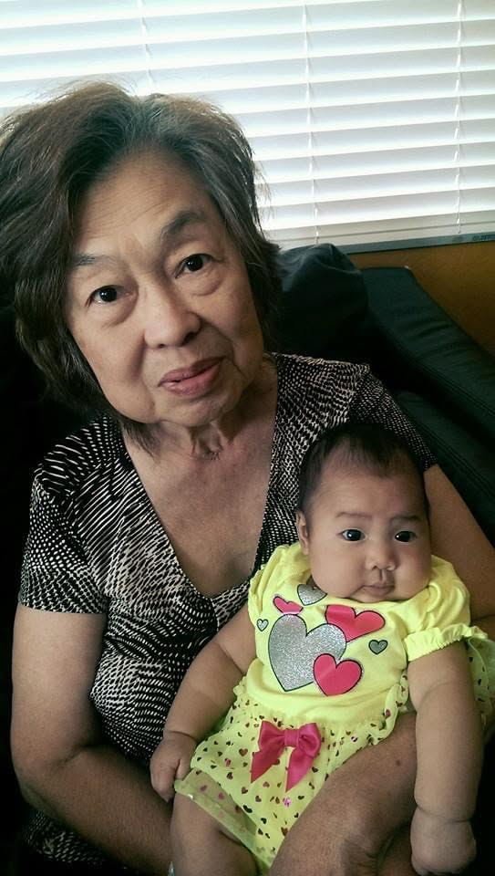
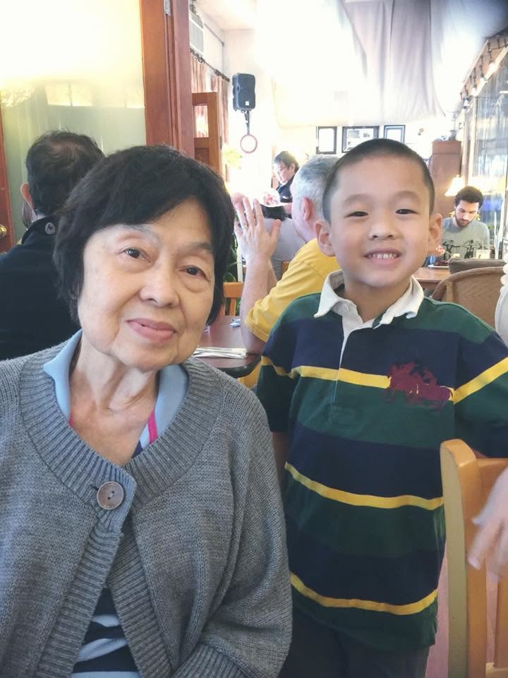
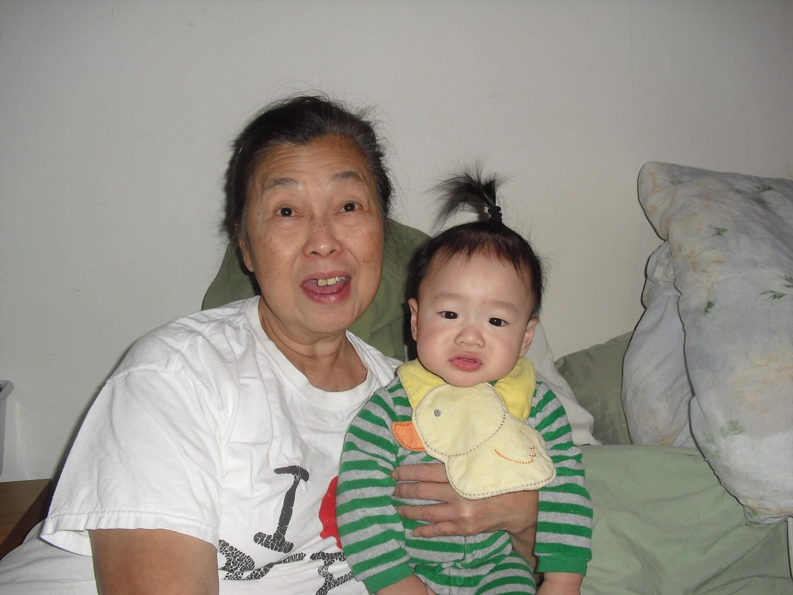
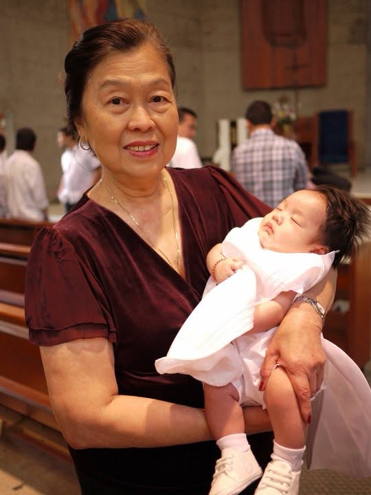

Welcome to Betty’s Place
Victoria “Betty” Satorre

In loving memory
December 23, 1941 – March 22, 2026
A warm family memory book for Victoria “Betty” Satorre — a place for photos, stories, announcements, livestream updates, and service information for everyone who loved her.
A Digital Memory Book
Inspired by the original “Betty’s Place,” this site is meant to feel personal, family-centered, and easy for relatives and friends to use — not like a formal funeral-home page.
Things Betty Loved
Service Details
- Date
- May 30, 2026
- Time
- 10:00 AM
- Location
-
Sacred Heart Roman Catholic Church
344 W. Workman St., Covina, CA 91723
A Mass of Christian Burial will be celebrated by Fr. Bill. Additional details for the reception, livestream, flowers, and memorial contributions will be shared here when finalized.
Life & Legacy
Born Victoria Gesalan Ang on December 23, 1941 in Dalaguete, Cebu, Philippines, Victoria A. Satorre lived a life rooted in faith, family, education, and service. She passed away on March 22, 2026 in Bakersfield, California.
Victoria was a dedicated educator who devoted much of her life to higher education in the Philippines, including service as Dean at the University of San Carlos in Cebu City. She is remembered for her wisdom, leadership, and lifelong commitment to learning.
Beyond her professional accomplishments, Victoria was a loving wife, mother, grandmother, sister, aunt, educator, and friend. She was a proud grandmother to Johan, Ella, Toby, LA, MK, and Santi. A devout Catholic, her faith was central to the way she loved her family, served others, and carried herself through life. She also loved the simple joy of time together — especially Mahjong, one of her favorite pastimes with family — and she was a great cook whose meals brought people together. Her December 23 birthday often made the Christmas season a time of extra warmth, celebration, and family memories.
Her Story, In Moments
Explore Betty’s timeline and leave a tribute so family and friends can continue building this memory book together.
Trunk Up for Betty
Betty collected elephant figurines, always with the trunk pointing up — a small symbol of blessing, good fortune, and the joyful keepsakes that made her home feel like hers.
Celebration of Life
We will honor Victoria’s memory with stories, prayer, and time together as family and community. If you would like to share a memory, photo, or message, please contact the family using the information below.
Family Memory Book


Birthday & Family Moments
Victoria’s birthday was December 23, close to Christmas — a season that brought family together around her with warmth, laughter, and love.










With Heartfelt Gratitude
The Satorre family is deeply grateful for the kindness, prayers, and generous support offered during this time. Special thanks to Jerome’s friends Gemo, Dencio, Irene, Myhli, Palang, Jolu, Micmic, and Alvin John, along with their families, for standing with the Satorre family and helping honor Betty’s memory. The family is also grateful to Lola Esther and the Tan Ting family cousins — Ernest, Edward, Chay, Eric, and Lynlyn — for their love and support.
Guest Book & Updates
Family and friends may sign the guest book, share condolences, and leave phone/email information for memorial updates once the guest book is connected.